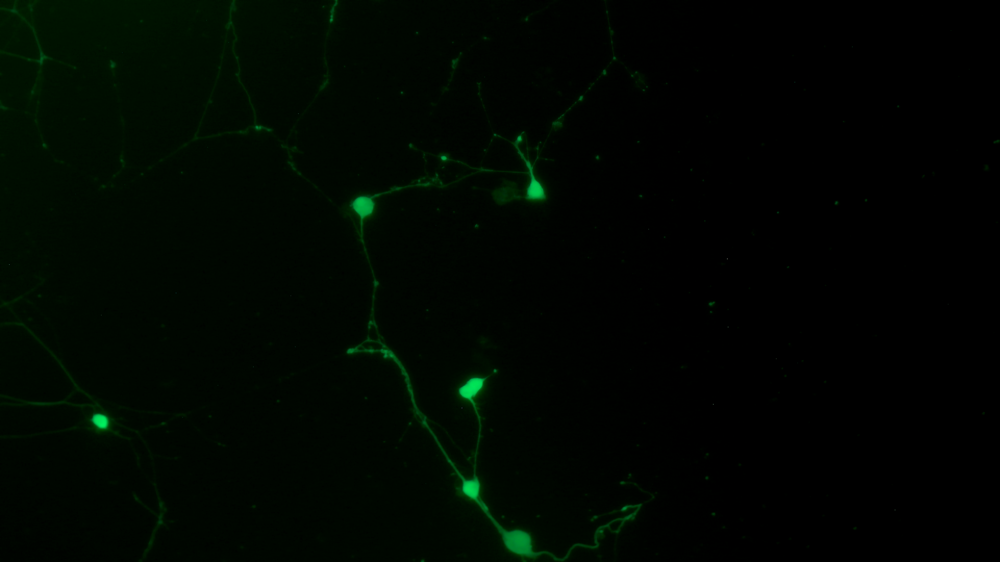
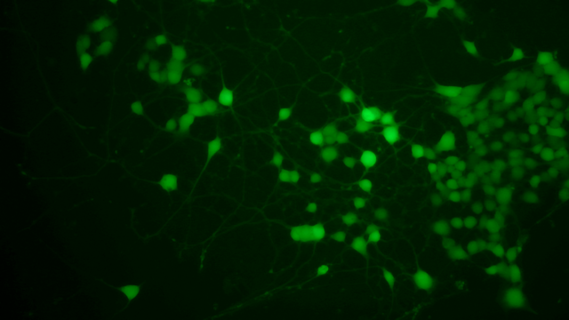
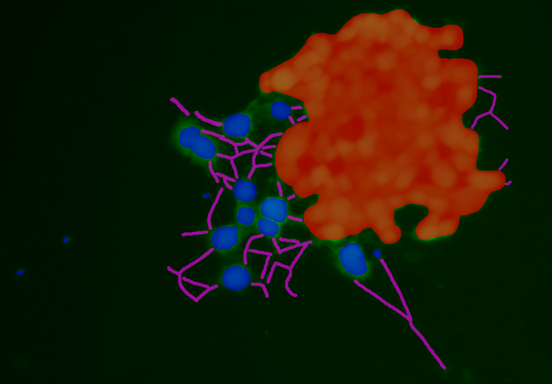
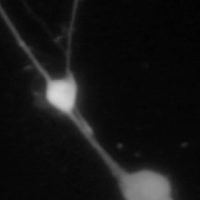
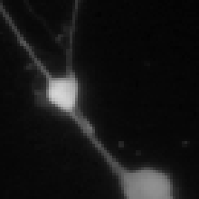
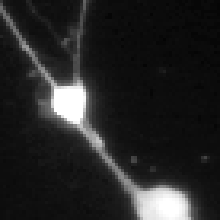
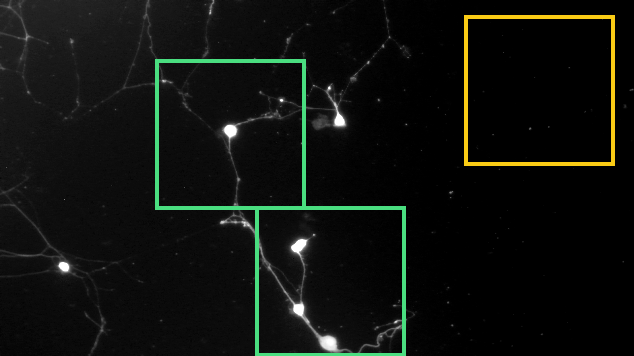
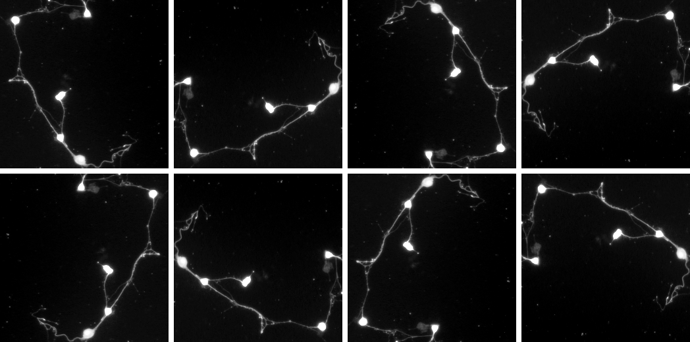
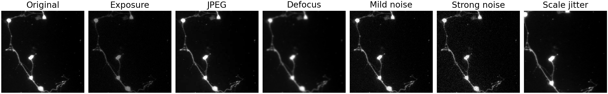

5×
Used on the first 26 labelled images






| Method | Dice i | Object F1 i | Count error i |
|---|---|---|---|
| U-Net (best variant) | 0.867 | 0.634 | 0.25 |
| nnU-Net | 0.871 | 0.565 | 0.83 |
| Cellpose-SAM, no training | 0.624 | 0.543 | 0.28 |
| Cellpose-SAM, fine-tuned | 0.871 | 0.699 | 0.21 |
Neurite (branch) clDice · change vs. the U-Net reference · mean of 5-fold cross-validation · same training loss i
Fully offline · React + FastAPI